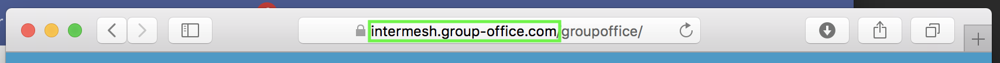

Welcome to the Group-Office user manual¶
Group-Office is an open-source groupware and CRM application. Visit https://www.group-office.com for more information.
Server hostname¶
You can connect to Group-Office with various software and devices. For all systems it’s important to know the hostname of your Group-Office. You can find that in the browser as shown in the highlighted part in this figure:

In this example web URL is https://intermesh.group-office.com/groupoffice and the server hostname is “intermesh.group-office.com”.
When you’ve noted your server hostname please proceed to the section of your device.